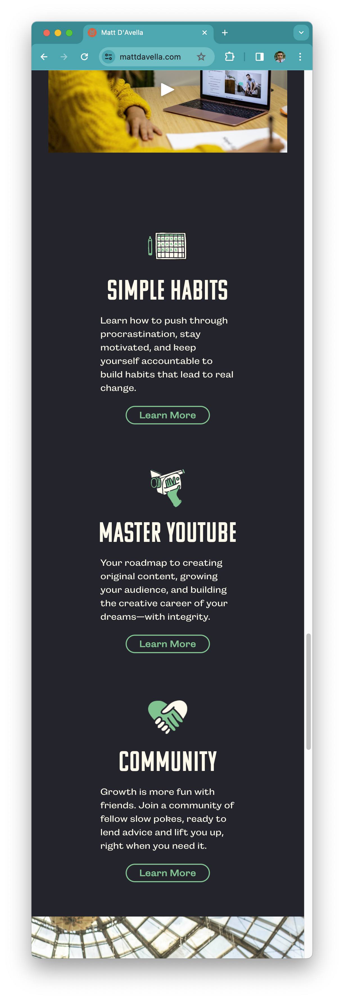
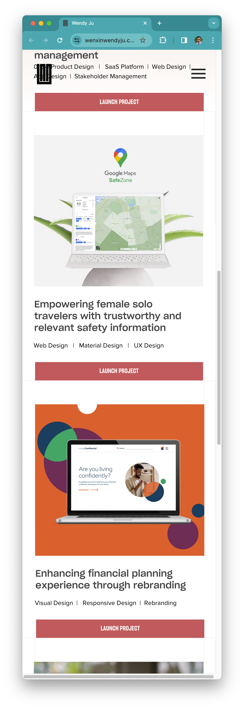
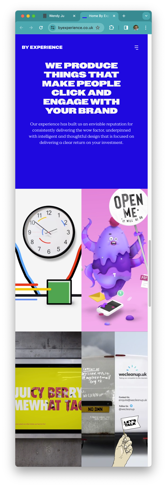

Repetition
Matt D'Avella
mattdavella.com Matt D'Avella decides to use the same elements for each of these subsections. He uses an icon, a header, a paragraph, and a link, and then repeats the same pattern for each of the subsections. This lets him keep the same style and make the website easy to read to the users.
Alignment
Wendy Ju
wenxinwendyju.com Wendy Ju shows mastery of alignment by having every element perfectly distanced from the left border of the page. This creates a sense of order, attention to detail, and professionalism.
Contrast
By Experience
byexperience.co.uk This marketing company know how to play with contrast between intense colors. That strong blue with the white text calls our attention immediately. Also, the designs and pictures they show are a powerful example of contrast in colors.